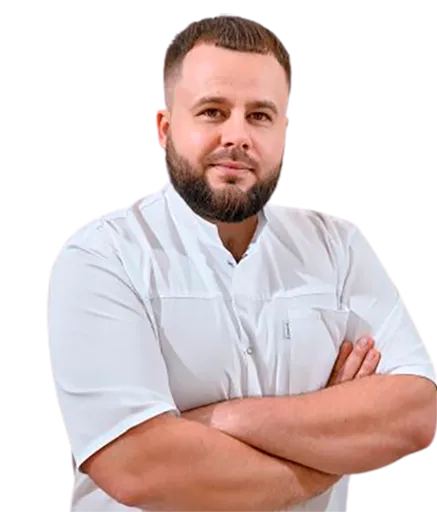

Ігор Ноєнко
Ендодонтія · сучасні протоколи · складна ендодонтія · переліковування
Практичні курси VSEODENT у різних містах України. Перегляньте найближчі дати, відкрийте програму конкретного курсу або залиште заявку — ми допоможемо обрати.
Найближчий курс · Ігор Ноєнко
Залиште контакти — підкажемо найближчий формат.
Починаємо рекламний фокус із найближчих дат, але на сайті одразу доступний весь календар — щоб користувач міг обрати тему, місто та дату.
Головна сторінка вже конверсійна. Але кожен курс має окрему сторінку з програмою, спікером і власною CTA — тому користувач може прийняти рішення на потрібній йому глибині.
На сайті робимо акцент не на “ще одному курсі”, а на конкретній професійній користі: протоколах, практичних навичках, спікерах і зручному виборі дати.
Люди купують не тільки тему — вони купують довіру до викладача. Тому спікери винесені в окремий сильний блок і повторюються на сторінках конкретних курсів.
Ендодонтія · сучасні протоколи · складна ендодонтія · переліковування

Power Endo · практичні курси з ендодонтії
Професійна гігієна від А до Я
Залиште заявку. У формі можна обрати курс, статус курсанта та БПР — далі команда VSEODENT зв’яжеться з вами у Viber або телефоном.
Так. У картці курсу натисніть «Зареєструватися» — форма відкриється вже з обраним курсом.
Відкрийте загальну форму «Підібрати курс» і виберіть потрібну дату всередині форми.
У реєстраційній формі для лікарів є окремий крок щодо БПР і даних, потрібних для нарахування балів.
Форма окремо проводить студентів та інтернів через підтвердження статусу, як у чинній механіці VSEODENT.